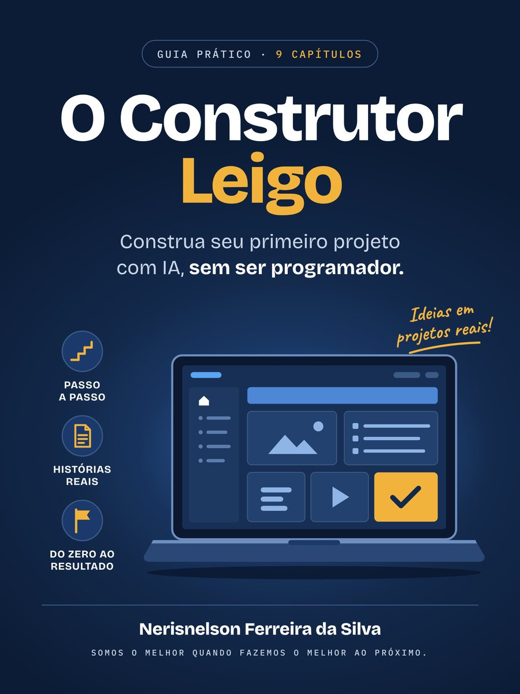
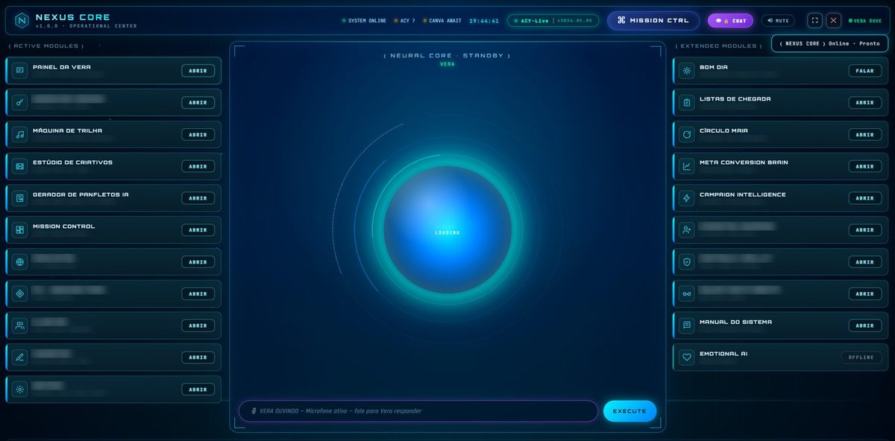
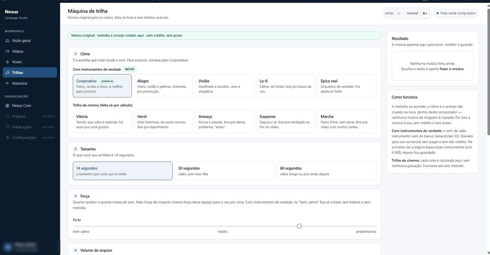
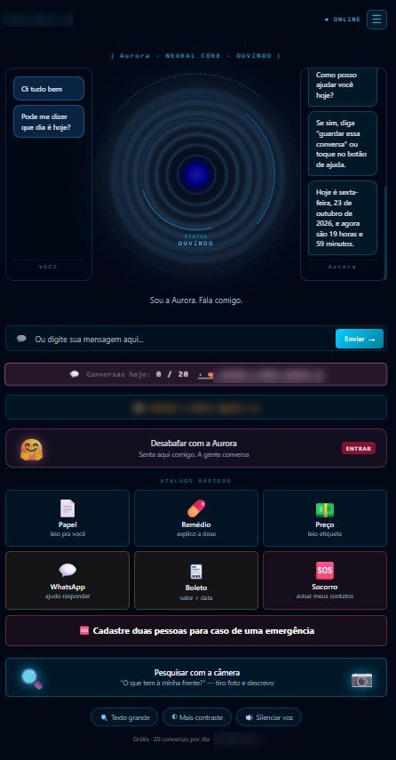

Você não precisa ser programador para construir um sistema de verdade.
Eu não sou programador. Com inteligência artificial, construí o sistema da empresa da minha família. Neste guia eu mostro como fazer isso com segurança: 9 regras, cada uma nascida de um erro real, com pedidos prontos para copiar e colar na IA.
- Pague com Pix, cartão ou boleto
- Chega na hora, no seu e-mail
- Garantia de 7 dias: não gostou, recebe o dinheiro de volta
- Pagamento seguro pela Kiwify
Eu não sou programador
Meu nome é Nerisnelson e eu nunca estudei programação. Mesmo assim, com a ajuda da inteligência artificial, construí o sistema de gestão da empresa da minha família, uma assistente de voz para pessoas com deficiência visual, baixa visão e para idosos, e uma secretária que agenda clientes pelo WhatsApp.
No caminho, errei muito. A IA escreve com muita segurança até quando está chutando: inventa telefone, diz que consertou sem ter consertado, deixa senha escrita onde qualquer um lê. Anotei cada erro com data e transformei cada um em uma regra. Este guia junta essas regras, para você não precisar errar igual.
As 9 regras do construtor
- Você não precisa ser programador. O seu papel é decidir, explicar o problema e cobrar prova.
- Um sistema de cada vez. A ordem certa para construir sem se perder.
- Não deixe a IA inventar. Três perguntas que desmascaram um chute.
- A Regra do Espelho. "Resolveu?" só tem três respostas: sim, não ou não sei.
- Backup antes de mexer. Como voltar em minutos quando algo quebra.
- Publicou, conferiu. As cinco conferências depois de colocar no ar.
- Senha e chave nunca ficam no código. O que fazer, e o que fazer se vazar.
- Tela que um leigo entende em 3 segundos. Onde estou, o que faço agora, qual o próximo passo.
- A memória do projeto. Os cadernos que fazem a IA continuar de onde parou.
O que eu construí seguindo estas regras
Estas são telas de verdade de sistemas que eu construí com a IA. Elas estão aqui para mostrar que as regras funcionam na prática, não como modelo para copiar.
O livro não ensina a montar estes sistemas. Ele ensina o jeito seguro de trabalhar com a IA para você construir o seu projeto, seja ele qual for. As histórias de cada capítulo aconteceram durante essas construções. Os dados sensíveis foram borrados de propósito.



Um guia para usar, não só para ler
- O livro em PDF, com 51 páginas, para ler no celular ou no computador.
- Pedidos prontos para copiar e colar na IA em cada capítulo, e todos juntos no final.
- Exercícios curtos, de três passos, no fim de cada capítulo.
- Um glossário com as palavras técnicas explicadas em português simples.
Para quem é este guia
É para você que
- tem uma ideia ou um problema no trabalho e quer resolver com um sistema, sem saber programar;
- já usa IA, mas quer errar menos;
- quer cuidar dos dados de quem confia em você.
Não é para você que
- procura um jeito de ficar rico rápido;
- quer um curso de programação ou de uma ferramenta específica;
- quer um passo a passo para copiar um dos sistemas mostrados aqui;
- quer que alguém construa por você.
Garantia de 7 dias
Leia o livro com calma. Se não for para você, peça o dinheiro de volta em até 7 dias pela própria Kiwify, sem precisar explicar o motivo.
Perguntas frequentes
Preciso saber programar?
Não. O guia foi feito para quem nunca programou.
Serve para qual inteligência artificial?
O método vale para qualquer uma (ChatGPT, Gemini, Claude e outras). O guia ensina como pedir e como conferir, não uma ferramenta específica.
Como recebo o livro?
Logo depois do pagamento, pelo e-mail e na área de membros da Kiwify. No Pix, a liberação é na hora.
Vou ganhar dinheiro com isso?
O guia não promete renda. Ele ensina a construir com segurança e a errar menos.
E se eu não gostar?
Você tem 7 dias para pedir o dinheiro de volta pela própria Kiwify.
Posso passar o arquivo para alguém?
Não. A compra dá direito a uma cópia para uso pessoal.